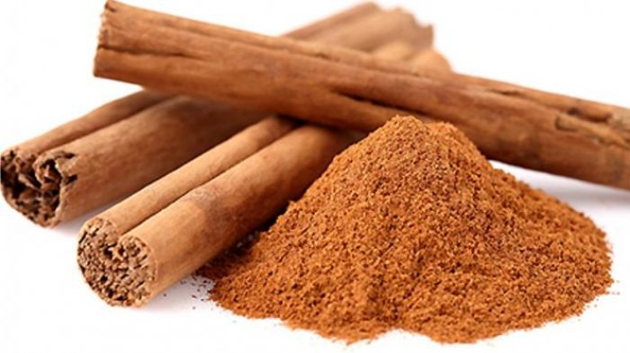
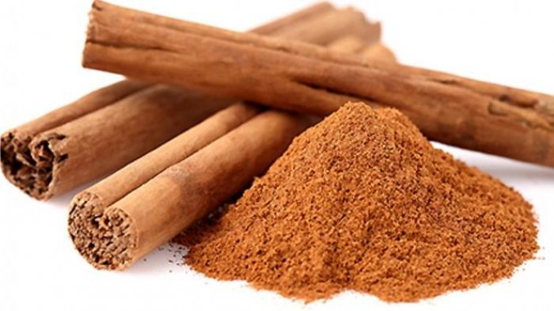

Your Address or Destination Adress:
Herb name: Jahe Kencur Temulawak Kunyit Jahe Merah Kayu Manis Lengkuas
Order(gr): 500gr 1000gr 1500gr 2000gr 2500gr 3000gr 3500gr 4000gr More orders
For more order, can request here:
Sevice Provider:
JNE J&T TIKI POS Indonesia SiCepat
Delivery Speed:
Regular Express OTW Sameday
 Fig.2 - Jahe Putih
Fig.3 - Kencur
Fig.2 - Jahe Putih
Fig.3 - Kencur
 Fig.5 - Jahe Merah
Fig.5 - Jahe Merah


 
